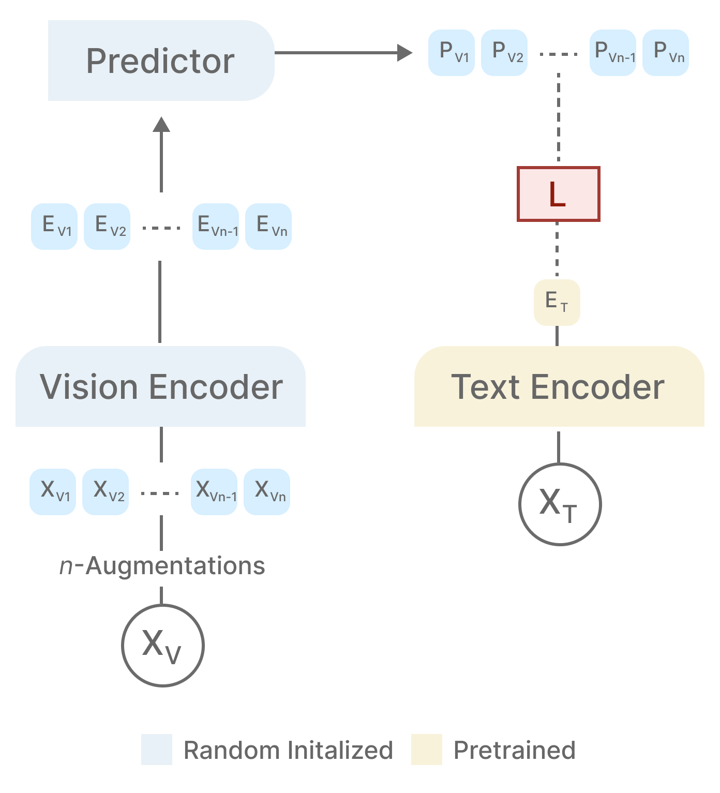
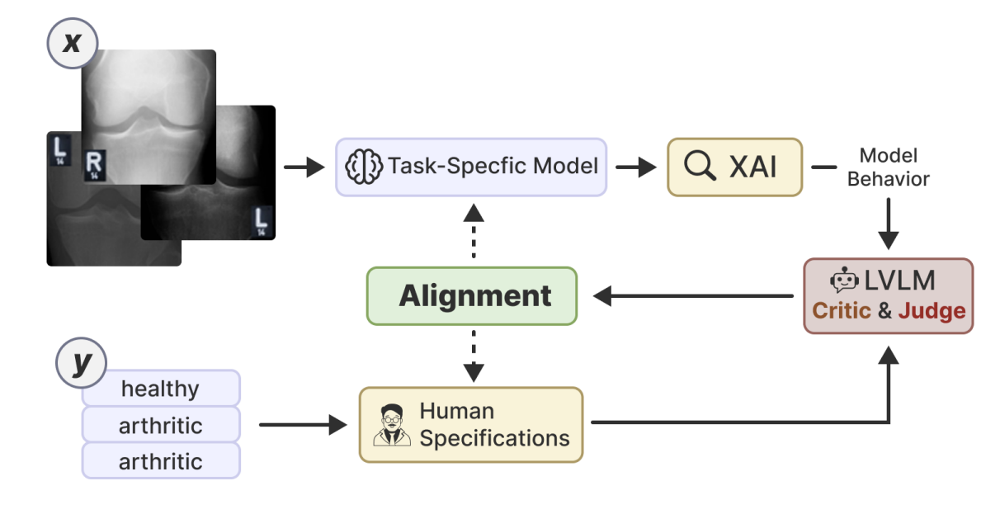
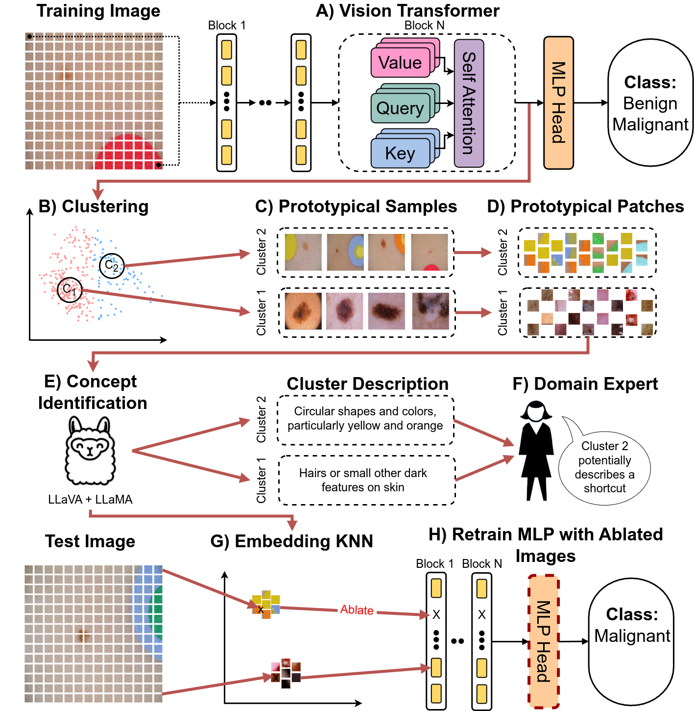
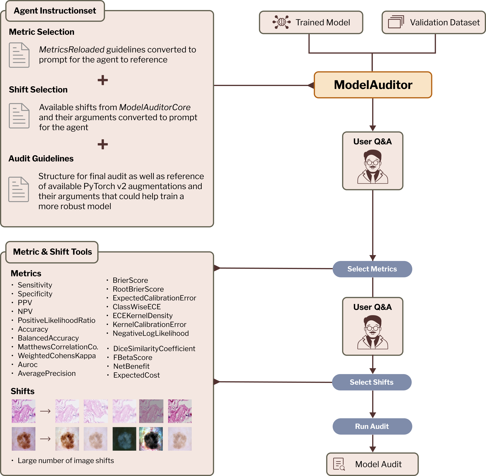
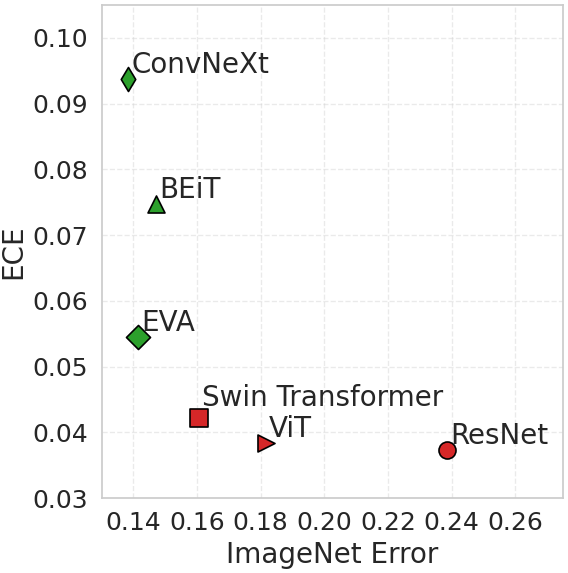
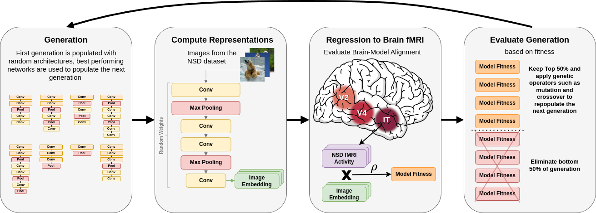

|
Lukas Kuhn I'm a research scientist at the MLO Lab lead by Prof. Dr. Florian Buettner in Frankfurt and a Masters student at Goethe University Frankfurt in AI & Computational Neuroscience. |

|
ResearchI study how systems can learn structured predictive models of the world, drawing on energy-based modeling, generative AI, and insights from neuroscience. Some papers are highlighted. |
|

|
Non-Contrastive Vision-Language Learning with Predictive Embedding
Alignment
Lukas Kuhn, Giuseppe Serra Florian Buettner arXiv, 2026 arXiv We introduce NOVA, a NOn-contrastive Vision-language Alignment framework based on joint embedding prediction with distributional regularization. NOVA aligns visual representations to a frozen, domain-specific text encoder by predicting text embeddings from augmented image views, while enforcing an isotropic Gaussian structure via Sketched Isotropic Gaussian Regularization (SIGReg). |
|

|
LVLM-Aided Alignment of Task-Specific Vision Models
Alexander Koeber, Lukas Kuhn, Ingo Thon Florian Buettner arXiv, 2025 arXiv Small vision models in high-stakes domains often learn spurious correlations that don't align with human expertise, leading to unreliable real-world performance. LVLM-VA addresses this by using large vision-language models as a bridge between domain experts and task-specific models, translating human knowledge into actionable feedback that reduces reliance on spurious features without requiring fine-grained annotations. |
|

|
Efficient unsupervised shortcut learning detection and mitigation in
transformers
Lukas Kuhn, Sari Sadiya, Joerg Schlotterer, Florian Buettner, Christin Seifert, Gemma Roig ICCV, 2025 project page / arXiv By leveraging MLLMs and the representational structure of the Transformer architecture we are able to detect and mitigate shortcuts completely unsupervised. |
|

|
An autonomous agent for auditing and improving the reliability of clinical
AI models
Lukas Kuhn, Florian Buettner MICCAI MedAgent, 2025 arXiv Multi-agent architecture that generates interpretable reports explaining how much computer vision model performance likely degrades during deployment, discussing specific likely failure modes and identifying root causes and mitigation strategies. |
|

|
Beyond Overconfidence: Foundation Models Redefine Calibration in Deep
Neural Networks
Achim Heckler, Lukas Kuhn, Florian Buettner arXiv, 2025 arXiv Empirical analysis of vision foundation models that shows that these models tend to be underconfident in in-distribution predictions, resulting in higher calibration errors, while demonstrating improved calibration under distribution shifts. |
|

|
Cognitive Neural Architecture Search Reveals Hierarchical Entailment
Lukas Kuhn, Sari Sadiya, Gemma Roig ICLR ReAlign, 2025 arXiv We demonstrate that optimizing convolutional network architectures for brain-alignment via evolutionary neural architecture search results in models with clear representational hierarchies. The identified models achieve brain-alignment scores surpassing even those of pretrained classification models. |
|
Website Design copied with permission from https://jonbarron.github.io/ |